The TikZ and PGF Packages
Manual for version 3.1.9a
TikZ
24 Decorated Paths
24.1 Overview¶
Decorations are a general concept to make (sub)paths “more interesting”. Before we have a look at the details, let us have a look at some examples:
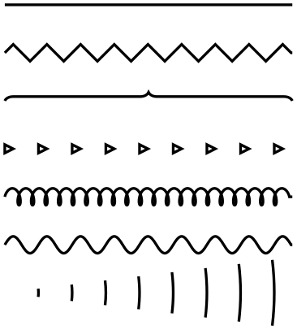
\usetikzlibrary { decorations.pathmorphing,
decorations.pathreplacing, decorations.shapes, }
\begin{tikzpicture}[thick]
\draw
class="textcolor" style="color:#800080"
>(0,3) --
(3,3);
\draw[decorate,decoration=zigzag] (0,2.5) --
(3,2.5);
\draw[decorate,decoration=brace] (0,2) --
(3,2);
\draw[decorate,decoration=triangles] (0,1.5) --
(3,1.5);
\draw[decorate,decoration={coil,segment length=4pt}] (0,1) --
(3,1);
\draw[decorate,decoration={coil,aspect=0}] (0,.5) --
(3,.5);
\draw[decorate,decoration={expanding waves,angle=7}] (0,0) --
(3,0);
\end{tikzpicture}
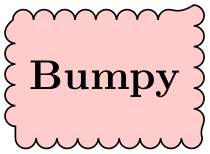
\usetikzlibrary {decorations.pathmorphing}
\begin{tikzpicture}
\node [fill=red!20,draw,decorate,decoration={bumps,mirror},
minimum height=1cm]
{Bumpy};
\end{tikzpicture}
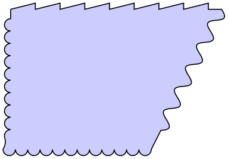
\usetikzlibrary {decorations.pathmorphing}
\begin{tikzpicture}
\filldraw[fill=blue!20] (0,3)
decorate
[decoration=saw] { --
(3,3) }
decorate
[decoration={coil,aspect=0}] { --
(2,1) }
decorate
[decoration=bumps] { -|
(0,3) };
\end{tikzpicture}
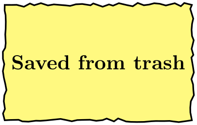
\usetikzlibrary {decorations.pathmorphing}
\begin{tikzpicture}
\node [fill=yellow!50,draw,thick, minimum height=2cm, minimum width=3cm,
decorate, decoration={random steps,segment length=3pt,amplitude=1pt}]
{Saved
from
trash};
\end{tikzpicture}
The general idea of decorations is the following: First, you construct a path using the usual path construction commands. The resulting path is, in essence, a series of straight and curved lines. Instead of directly using this path for filling or drawing, you can then specify that it should form the basis for a decoration. In this case, depending on which decoration you use, a new path is constructed “along” the path you specified. For instance, with the zigzag decoration, the new path is a zigzagging line that goes along the old path.
Let us have a look at an example: In the first picture, we see a path that consists of a line, an arc, and a line. In the second picture, this path has been used as the basis of a decoration.
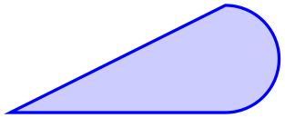
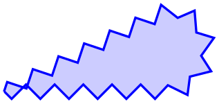
It is also possible to decorate only a subpath (the exact syntax will be explained later in this section).
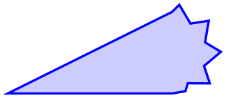
The zigzag decoration will be called a path morphing decoration because it morphs a path into a different, but topologically equivalent path. Not all decorations are path morphing; rather there are three kinds of decorations.
-
1. The just-mentioned path morphing decorations morph the path in the sense that what used to be a straight line might afterwards be a squiggly line or might have bumps. However, a line is still and a line and path deforming decorations do not change the number of subpaths.
Examples of such decorations are the snake or the zigzag decoration. Many such decorations are defined in the library decorations.pathmorphing.
-
2. Path replacing decorations completely replace the path by a different path that is only “loosely based” on the original path. For instance, the crosses decoration replaces a path by a path consisting of a sequence of crosses. Note how in the following example filling the path has no effect since the path consist only of (numerous) unconnected straight line subpaths:
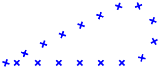
Examples of path replacing decorations are crosses or ticks or shape backgrounds. Such decorations are defined in the library decorations.pathreplacing, but also in decorations.shapes.
-
3. Path removing decorations completely remove the to-be-decorated path. Thus, they have no effect on the main path that is being constructed. Instead, they typically have numerous side effects. For instance, they might “write some text” along the (removed) path or they might place nodes along this path. Note that for such decorations the path usage command for the main path have no influence on how the decoration looks like.
Decorations are defined in different decoration libraries, see Section 50 for details. It is also possible to define your own decorations, see Section 102, but you need to use the pgf basic layer and a bit of theory is involved.
Decorations can be used to decorate already decorated paths. In the following three graphics, we start with a simple path, then decorate it once, and then decorate the decorated path once more.
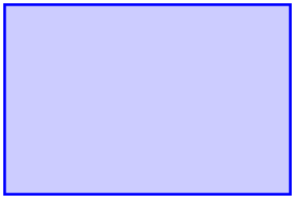
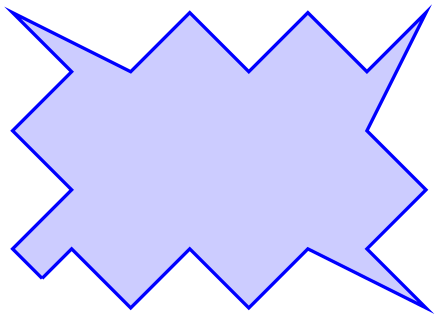
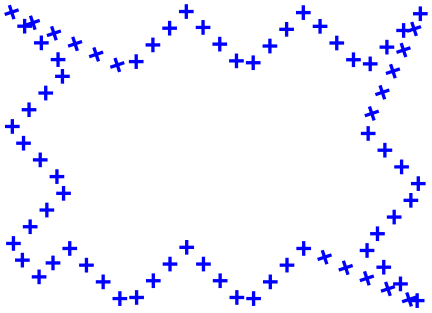
\usetikzlibrary { decorations.pathmorphing,
decorations.shapes, }
\tikz \fill [fill=blue!20,draw=blue,thick]
decorate[decoration={crosses,segment length=2mm}] {
decorate[decoration={zigzag,segment length=10mm,amplitude=2.5mm}] {
(0,0) rectangle
(3,2)
}
};
One final word of warning: Decorations can be pretty slow to typeset and they can be inaccurate. The reason is that pgf has to do a lot of rather difficult computations in the background and TeX is not very good at doing math. Decorations are fastest when applied to straight line segments, but even then they are much slower than other alternatives. For instance, the ticks decoration can be simulated by clever use of a dashing pattern and the dashing pattern will literally be thousands of times faster to typeset. However, for most decorations there are no real alternatives.
TikZ Library decorations ¶
\usetikzlibrary{decorations} %
LaTeX
and plain
TeX
\usetikzlibrary[decorations] % ConTeXt
In order to use decorations, you first have to load a
decorations library. This
decorations library defines the basic
options described in the following, but it does not define any new
decorations. This is done by libraries like
decorations.text. Since these more
specialized libraries include the
decorations library automatically, you
usually do not have to bother about it.
24.2 Decorating a Subpath Using the Decorate Path Command¶
The most general way to decorate a (sub)path is the following path command.
\path … decorate[⟨options⟩]{⟨subpath⟩} …; ¶
This path operation causes the ⟨subpath⟩ to be decorated using the current decoration. Depending on the decoration, this may or may not extend the current path.
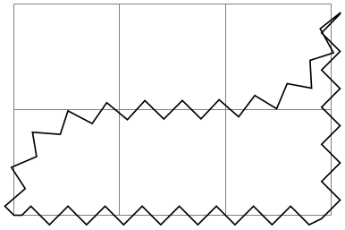
\usetikzlibrary {decorations.pathmorphing}
\begin{tikzpicture}
\draw [help lines] grid
(3,2);
\draw decorate
[decoration={name=zigzag}]
{ (0,0) .. controls
(0,2) and
(3,0) .. (3,2) |-
(0,0) };
\end{tikzpicture}
The path can include straight lines, curves, rectangles, arcs, circles, ellipses, and even already decorated paths (that is, you can nest applications of the decorate path command, see below).
Due to the limits on the precision in TeX, some inaccuracies in positioning when crossing input segment boundaries may occasionally be found.
You can use nodes normally inside the ⟨subpath⟩.
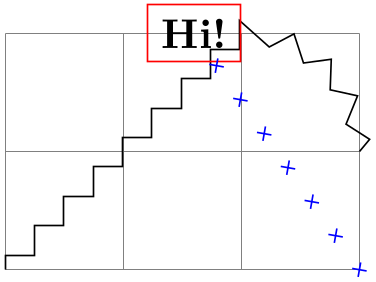
\usetikzlibrary { decorations.pathmorphing,
decorations.shapes, }
\begin{tikzpicture}
\draw [help lines] grid
(3,2);
\draw decorate
[decoration={name=zigzag}]
{ (0,0) --
(2,2) node
(hi) [left,draw=red] {Hi!} arc(90:0:1)};
\draw [blue] decorate
[decoration={crosses}] {(3,0) --
(hi)};
\end{tikzpicture}
The following key is used to select the decoration and also to select further “rendering options” for the decoration.
/pgf/decoration=⟨decoration options⟩(no default) ¶
alias /tikz/decoration
This option is used to specify which decoration is used and how it will look like. Note that this key will not cause any decorations to be applied, immediately. It takes the decorate path command or the decorate option to actually decorate a path. The decoration option is only used to specify which decoration should be used, in principle. You can also use this option at the beginning of a picture or a scope to specify the decoration to be used with each invocation of the decorate path command. Naturally, any local options of the decorate path command override these “global” options.
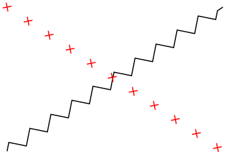
\usetikzlibrary { decorations.pathmorphing,
decorations.shapes, }
\begin{tikzpicture}[decoration=zigzag]
\draw decorate
{(0,0) --
(3,2)};
\draw [red] decorate
[decoration=crosses] {(0,2) --
(3,0)};
\end{tikzpicture}
The ⟨decoration options⟩ are special options (which have the path prefix /pgf/decoration/) that determine the properties of the decoration. Which options are appropriate for a decoration strongly depend on the decoration, you will have to look up the appropriate options in the documentation of the decoration, see Section 50.
There is one option (available only in TikZ) that is special:
/pgf/decoration/name=⟨name⟩ (no default, initially none) ¶
Use this key to set which decoration is to be used. The ⟨name⟩ can both be a decoration or a meta-decoration (you need to worry about the difference only if you wish to define your own decorations).
If you set ⟨name⟩ to none, no decorations are added.
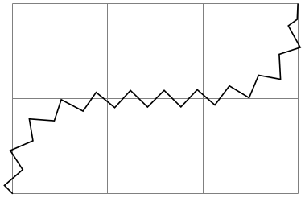
\usetikzlibrary {decorations.pathmorphing}
\begin{tikzpicture}
\draw [help lines] grid
(3,2);
\draw decorate
[decoration={name=zigzag}]
{ (0,0) .. controls
(0,2) and
(3,0) .. (3,2) };
\end{tikzpicture}
Since this option is used so often, you can also leave out the name= part. Thus, the above example can be rewritten more succinctly:
\usetikzlibrary {decorations.pathmorphing}
\begin{tikzpicture}
\draw [help lines] grid
(3,2);
\draw decorate
[decoration=zigzag]
{ (0,0) .. controls
(0,2) and
(3,0) .. (3,2) };
\end{tikzpicture}
In general, when ⟨decoration options⟩ are parsed, for each unknown key it is checked whether that key happens to be a (meta-)decoration and, if so, the name option is executed for this key.
Further options allow you to adjust the position of decorations relative to the to-be-decorated path. See Section 24.4 below for details.
Recall that some decorations actually completely remove the to-be-decorated path. In such cases, the construction of the main path is resumed after the decorate path command ends.
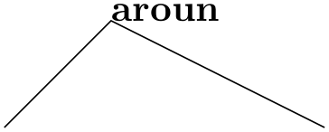
\usetikzlibrary {decorations.text}
\begin{tikzpicture}[decoration={text
along
path,text=
around
and around
and around
and around we go}]
\draw (0,0) --
(1,1) decorate
{ --
(2,1) } --
(3,0);
\end{tikzpicture}
It is permissible to nest decorate commands. In this case, the path resulting from the first decoration process is used as the to-be-decorated path for the second decoration process. This is especially useful for drawing fractals. The Koch snowflake decoration replaces a straight line like by . Repeatedly applying this transformation to a triangle yields a fractal that looks a bit like a snowflake, hence the name.
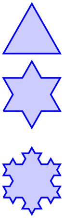
\usetikzlibrary {decorations.fractals}
\begin{tikzpicture}[decoration=Koch snowflake,draw=blue,fill=blue!20,thick]
\filldraw (0,0) --
++(60:1) --
++(-60:1) --
cycle
;
\filldraw decorate{ (0,-1) --
++(60:1) --
++(-60:1) --
cycle
};
\filldraw decorate{ decorate{ (0,-2.5) --
++(60:1) --
++(-60:1) --
cycle
}};
\end{tikzpicture}
24.3 Decorating a Complete Path¶
You may sometimes wish to decorate a path over whose construction you have no control. For instance, the path of the background of a node is created without having a chance to issue a decorate path command. In such cases you can use the following option, which allows you to decorate a path “after the fact”.
/tikz/decorate=⟨boolean⟩ (default true) ¶
When this key is set, the whole path is decorated after it has been finished. The decoration used for decorating the path is set via the decoration way, in exactly the same way as for the decorate path command. Indeed, the following two commands have the same effect:
1. \path decorate[⟨options⟩] {⟨path⟩};
2. \path [decorate,⟨options⟩] ⟨path⟩;
The main use or the decorate option is the you can also use it with the nodes. It then causes the background path of the node to be decorated. Note that you can decorate a background path only once in this manner. That is, in contrast to the decorate path command you cannot apply this option twice (this would just set it to true, once more).
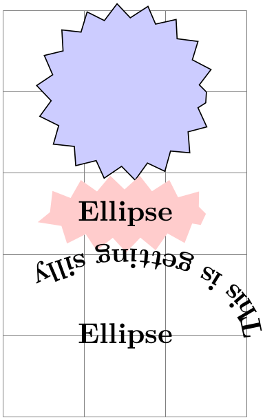
\usetikzlibrary { decorations.pathmorphing,
decorations.text, shapes.geometric, }
\begin{tikzpicture}[decoration=zigzag]
\draw [help lines] (0,0) grid
(3,5);
\draw [fill=blue!20,decorate] (1.5,4) circle
(1cm);
\node at
(1.5,2.5) [fill=red!20,decorate,ellipse] {Ellipse};
\node at
(1.5,1) [inner sep=6mm,fill=red!20,decorate,ellipse,decoration=
{text
along
path,text={This is
getting silly}}] {Ellipse};
\end{tikzpicture}
In the last example, the text along path decoration removes the path. In such cases it is useful to use a pre- or postaction to cause the decoration to be applied only before or after the main path has been used. Incidentally, this is another application of the decorate option that you cannot achieve with the decorate path command.
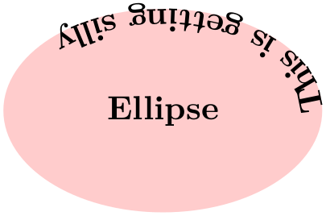
\usetikzlibrary { decorations.pathmorphing,
decorations.text, shapes.geometric, }
\begin{tikzpicture}[decoration=zigzag]
\node at
(1.5,1) [inner sep=6mm,fill=red!20,ellipse,
postaction={decorate,decoration=
{text
along
path,text={This is
getting silly}}}] {Ellipse};
\end{tikzpicture}
Here is more useful example, where a postaction is used to add the path after the main path has been drawn.
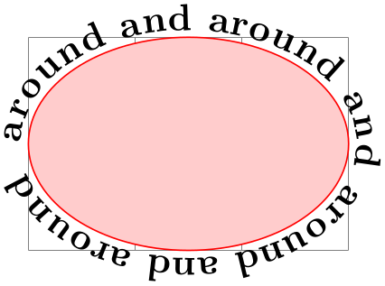
\usetikzlibrary {decorations.text}
\begin{tikzpicture}
\draw [help lines] grid
(3,2);
\fill [draw=red,fill=red!20,
postaction={decorate,decoration={raise=2pt,text
along
path,
text=around
and around
and around
and around we go}}]
(0,1) arc
(180:-180:1.5cm and 1cm);
\end{tikzpicture}
24.4 Adjusting Decorations¶
24.4.1 Positioning Decorations Relative to the To-Be-Decorate Path¶
The following option, which are only available with TikZ, allow you to modify the positioning of decorations relative to the to-be-decorated path.
/pgf/decoration/raise=⟨dimension⟩ (no default, initially 0pt) ¶
The segments of the decoration are raised by ⟨dimension⟩ relative to the to-be-decorated path. More precisely, the segments of the path are offset by this much “to the left” of the path as we travel along the path. This raising is done after and in addition to any transformations set using the transform option (see below).
A negative ⟨dimension⟩ will offset the decoration “to the right” of the to-be-decorated path.
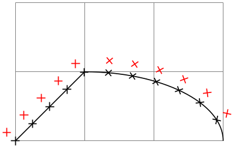
\usetikzlibrary {decorations.shapes}
\begin{tikzpicture}
\draw [help lines] (0,0) grid
(3,2);
\draw (0,0) --
(1,1) arc
(90:0:2 and 1);
\draw decorate
[decoration=crosses]
{ (0,0) --
(1,1) arc
(90:0:2 and 1) };
\draw[red] decorate
[decoration={crosses,raise=5pt}]
{ (0,0) --
(1,1) arc
(90:0:2 and 1) };
\end{tikzpicture}
/pgf/decoration/mirror=⟨boolean⟩(no default) ¶
Causes the segments of the decoration to be mirrored along the to-be-decorated path. This is done after and in addition to any transformations set using the transform and/or raise options.
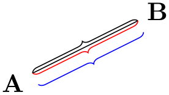
\usetikzlibrary {decorations.pathreplacing}
\begin{tikzpicture}
\node (a) {A};
\node (b) at
(2,1) {B};
\draw
class="textcolor" style="color:#800080" >(a) --
(b);
\draw[decorate,decoration=brace] (a) --
(b);
\draw[decorate,decoration={brace,mirror},red] (a) --
(b);
\draw[decorate,decoration={brace,mirror,raise=5pt},blue] (a) --
(b);
\end{tikzpicture}
/pgf/decoration/transform=⟨transformations⟩(no default) ¶
This key allows you to specify general ⟨transformations⟩ to be applied to the segments of a decoration. These transformations are applied before and independently of raise and mirror transformations. The ⟨transformations⟩ should be normal TikZ transformations like shift or rotate.
In the following example the shift only transformation is used to make sure that the crosses are not sloped along the path.
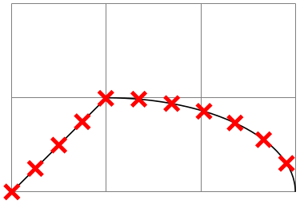
\usetikzlibrary {decorations.shapes}
\begin{tikzpicture}
\draw [help lines] (0,0) grid
(3,2);
\draw (0,0) --
(1,1) arc
(90:0:2 and 1);
\draw[red,very thick] decorate
[decoration={
crosses,transform={shift
only},shape
size=1.5mm}]
{ (0,0) --
(1,1) arc
(90:0:2 and 1) };
\end{tikzpicture}
24.4.2 Starting and Ending Decorations Early or Late¶
You sometimes may wish to “end” a decoration a bit early on the path. For instance, you might wish a snake decoration to stop 5mm before the end of the path and to continue in a straight line. There are different ways of achieving this effect, but the easiest may be the pre and post options, which only have an effect in TikZ. Note, however, that they can only be used with decorations, not with meta-decorations.
/pgf/decoration/pre=⟨decoration⟩ (no default, initially lineto) ¶
This key sets a decoration that should be used before the main decoration starts. The ⟨decoration⟩ will be used for a length of pre length, which 0pt by default. Thus, for the pre option to have any effect, you also need to set the pre length option.
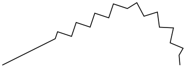
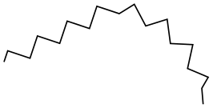
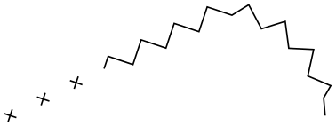
Note that the default pre option is lineto, not curveto. This means that the default pre decoration will not follow curves (for efficiency reasons). Change the pre key to curveto if you have a curved path.
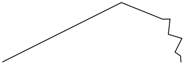
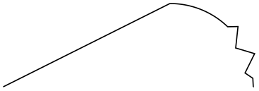
/pgf/decoration/pre length=⟨dimension⟩ (no default, initially 0pt) ¶
This key sets the distance along which the pre-decoration should be used. If you do not need/wish a pre-decoration, set this key to 0pt (exactly this string, not just to something that evaluates to the same things such as 0cm).
/pgf/decorations/post=⟨decoration⟩ (no default, initially lineto) ¶
Works like pre, only for the end of the decoration.
/pgf/decorations/post length=⟨dimension⟩ (no default, initially 0pt) ¶
Works like pre length, only for the end of the decoration.
Here is a typical example that shows how these keys can be used:
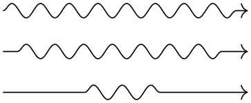
\usetikzlibrary {decorations.pathmorphing}
\begin{tikzpicture}
[decoration=snake,
line around/.style={decoration={pre length=#1,post
length=#1}}]
\draw[->,decorate] (0,0) --
++(3,0);
\draw[->,decorate,line around=5pt] (0,-5mm) --
++(3,0);
\draw[->,decorate,line around=1cm] (0,-1cm) --
++(3,0);
\end{tikzpicture}